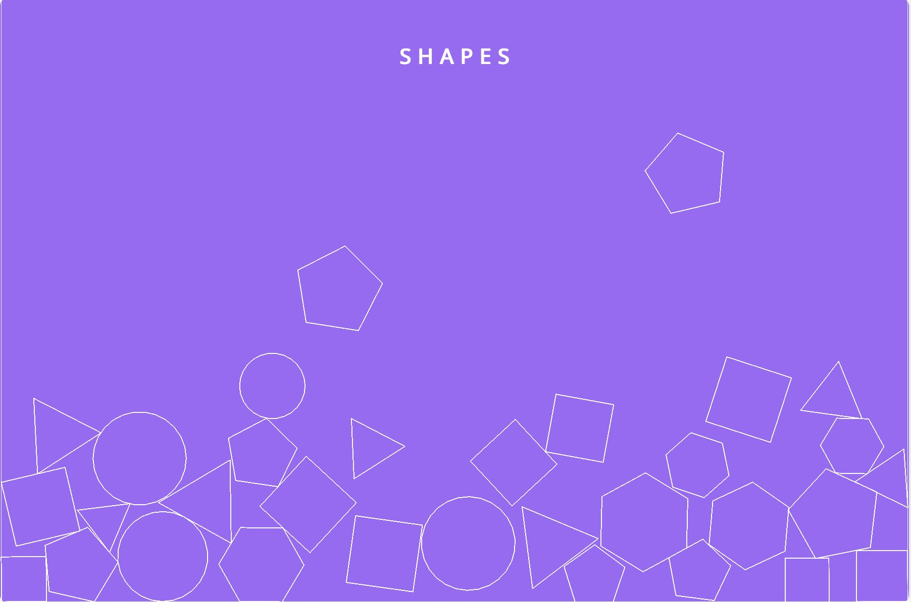
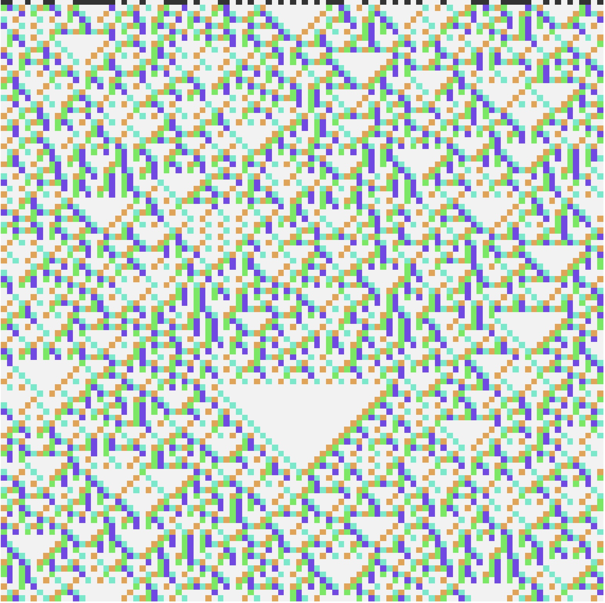
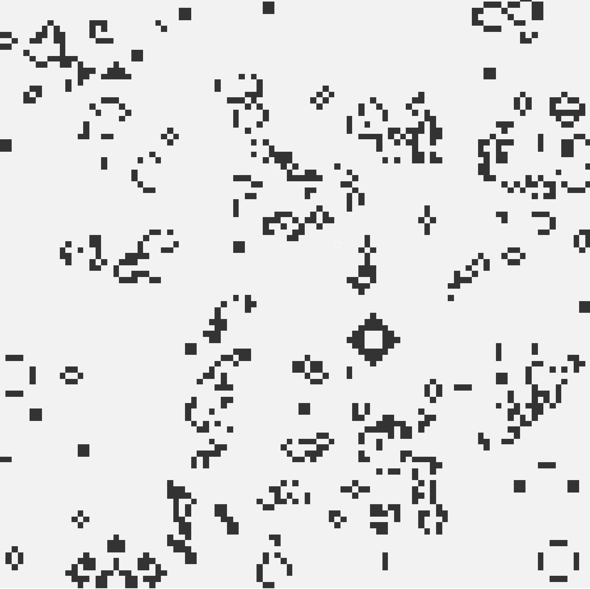
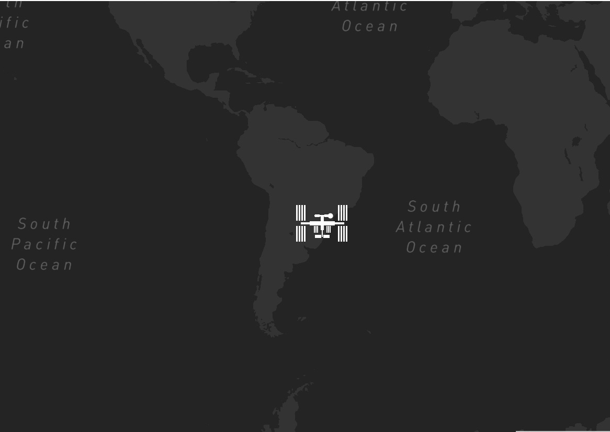
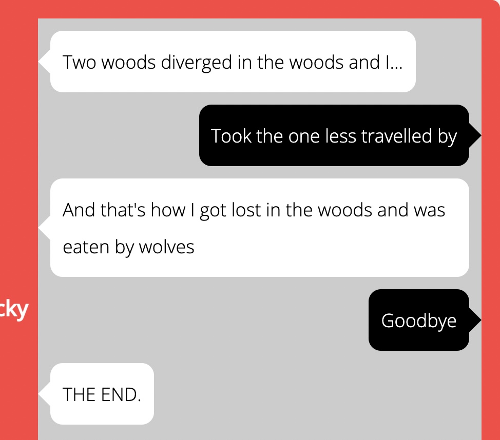

projects im working on!
different project i've been working on! a lot of them are programming project for beginners, and i'll try to give full credit when possible.
math and physics
 the boids alogirthm - Craig Reynolds' famous
alogirthm for simulating bird-like motion
the boids alogirthm - Craig Reynolds' famous
alogirthm for simulating bird-like motion

shapes! - throw some shapes around
elementary cellular automata - a simple process with not-so simple results
the game of life - and death?science and space

iss tracker and rocket launch schedule - because sometimes you need a break from earth protein modeling resources - to help plesae the
Haddock gods! (if you know you know)
protein modeling resources - to help plesae the
Haddock gods! (if you know you know)
for fun!

a bare-bones game conversation thingy - idk michaelsoft paint - making the next photoshop right here!
michaelsoft paint - making the next photoshop right here!
boid simulation
Created by Craig Reynolds, the boids simulation is meant to artificially describe the movement of flocks of birds. This implementation is far from perfect, but I just think they're pretty to look at! Click here for a full screen version.
resources and further exploration
- the original paper by Craig Reynolds
- check out smarter everyday's video on it too!
- the explorable explanations website by Nicky Case
- the coding train tutorial by Daniel Shiffman
- sebastian lague's implementation
physics shapes!
shapes and shapes and shapes (click and drag them around!)
S H A P E S
elementary cellular automaton simulation
This is a reverse engineering of Spaciecat's From Cell's To Systems, play that for an amazing exploration! In short, cells can either be alive or dead based on a rule you give. The first row can be whatever you like, but the rest will be determined by that rule.
To start, enter in the rule (a number from 0 to 255), and click the cells in the first row and watch them come alive! ECA is famous for its simple conditions and starting points and its many complicated results, so play around a little! Here is a list of interesting rules!
elementary cellular automaton
interesting rules for eca!
- rule 18, 22, 26, 60... - are all sierpiński's triangle
- rule 30 - entually leads to randomness, so it's used to make psuedo-random numbers (they're not totally random because you could recreate them if you had the starting conditions). it also has a similar appearance to the shell of the Conus textile snail!
- rule 90 - is sometimes called the "simplest, non-trivial cellular automaton" as it is just the XOR function
- rule 110 - is turing complete, meaning it can simulate the logic of any computer alogirthm! it lies on the boundry of order and chaos (just like me, when programming this)
- rule 184 - is used as a model of traffic flow in a single lane, surface deposition, and ballistic annihilation
sources and further reading if you're interested!
- From Cells to Systems by SpacieCat
- Elementary cellular automaton by Wikipedia
- Cellular automata and agent-based models by Matthew Macauley
- Universality in Elementary Cellular Automata by Matthew Cook
conway's game of life
John Conway's Game of Life is one of the most famous cellular automata! A cell can either be alive or dead based on its neighbors, and a cell's neighbors is defined as any cell adjacent to the edges or corners of the cell (8 in total). Determining whether a cell can live for the next generation is determined by the following:
- If a cell is alive and has less than 2 neighbors, it will die as if by underpopulation.
- If a cell is alive and has more than 3 neighbors, it will die as if by overpopulation.
- If a cell is dead and has exactly 3 neighbors, it will come alive as if by development.
why these numbers? because we're mathematicians and we make our own rules! i know conway didn't really like how popular this got, but i had fun coding it in! Rest in Peace John Conway.
game of life
(click and drag to randomize the cells!)
resources and further exploration!
- Conway's Game of Life by Wikipedia
- Does Conway hate his Game of Life? by Numberphile FEATURING JOHN CONWAY HIMSELF!!
- Inventing Game of Life by Numberphile AND ALSO FEATURING JOHN CONWAY!!!!
- Math's Fatal Flaw by Veritasium if you would like a mind bender
space stuff
where is the ISS?
this idea was taken from
the coding train
thanks to the people at
where is the iss at?
for maintaining the api!
upcoming rocket launches:
please do not spam this button, the rate limit is low
thanks
to the space devs for
making everything free!
other?
michaelsoft paint
idea taken from nomad coders, and my friends in cs who did this when they were 2